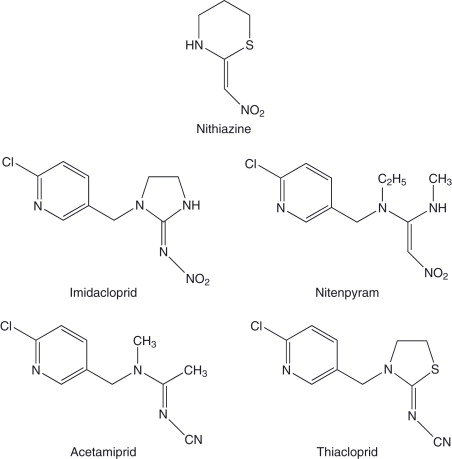
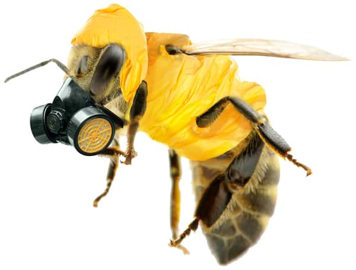
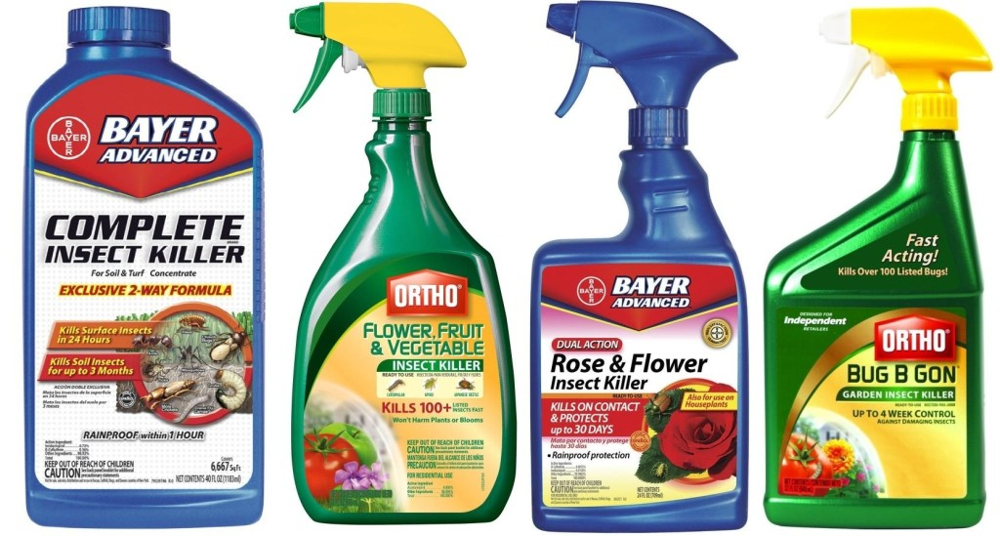
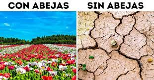
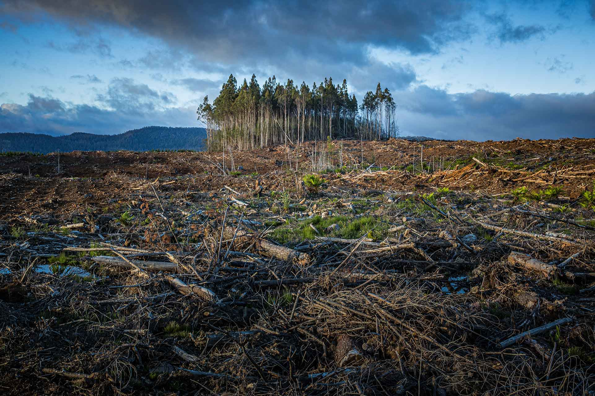

Bees play a crucial role in pollination, contributing to the global food supply and ecosystem sustainability. They are found in all ecosystems where there are flowering plants that need pollinators. Generally, the function of pollination is divided between different species and the most common is that this work is done by species that can pollinate many types of plants. In recent years, concerns have emerged regarding the decline of bee populations and its potential ramifications. One major factor under scrutiny is the use of neonicotinoid insecticides.
Bees are the most important agents in our ecosystem, about eighty-four percent of the commercial crops that feed humanity depend on them. Its main function is to carry out a pollen exchange between the flowers, helping its reproduction.
|
Neonicotinoids are widely used in agriculture and horticulture to protect crops from pests. The systemic nature of these pesticides means that they can accumulate in nectar, pollen, and other floral resources that are vital food sources for bees. Neonicotinoids belong a class of pesticides designed to target the nervous system of the insects. Pesticides are absorbed by plants and distributed throughout their tissues, making them particularly affective against pests. The mode of action of neonicotinoids involves binding to nicotinic acetylcholine receptors and in insects' nervous systems, causing hyperexcitation and paralysis.
|  |  |  |
Numerous studies have highlighted the detrimental effects of neonicotinoids on bee health and behavior. Neonicotinoids, impact on bee navigation and foraging behavior. These pesticides exhibit impaired learning and memory, making it difficult find their way back home.
The disappearance of bees can drastically prevents reduce the reproduction of many plant species, this can result in loss of biodiversity and imbalance of ecosystems. Agricultural production also in risk, having a strong impact on the global economy. The use of neonicotinoids in agriculture and horticulture poses significant risks to bee populations. The consequences of bee extinction would be far-reaching. Bees play a vital role in pollinating many plant species, and their disappearance can lead to a reduction in plant reproduction, loss of biodiversity, and an imbalance in ecosystems. Additionally, agriculture heavily relies on bees for pollination, and their decline could have severe implications for global food production and the economy. Given the risks posed by neonicotinoids and the importance of bees for ecosystem stability, it is crucial to explore alternative pest control methods and promote sustainable agricultural practices that prioritize bee health and conservation.
|  |
The use of neonicotinoid insecticides represents a significant threat to bee populations and the ecological balance they sustain. These systemic pesticides, although they are effective against pests, have proven to be highly detrimental to bee health, contributing to their disappearance.
|  |